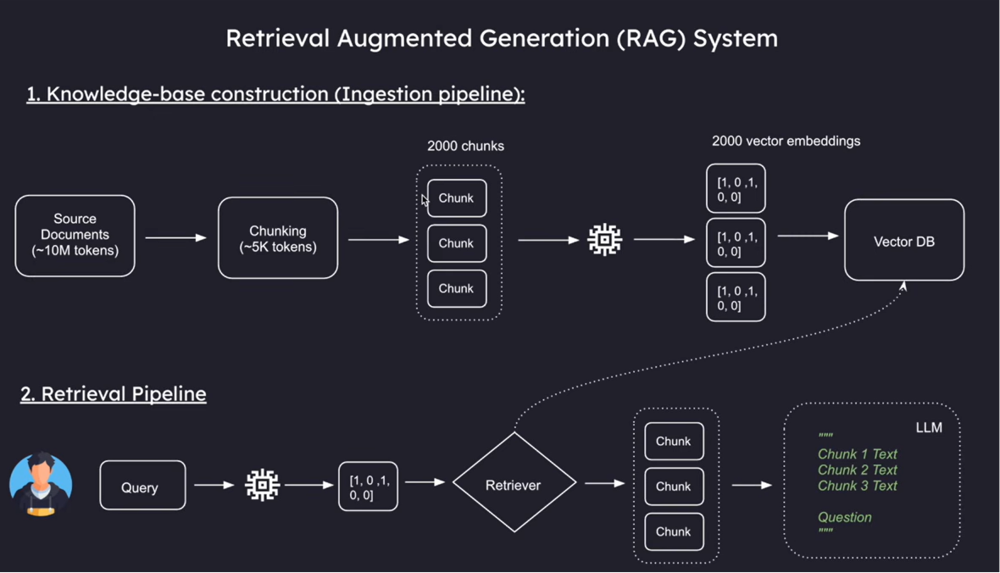
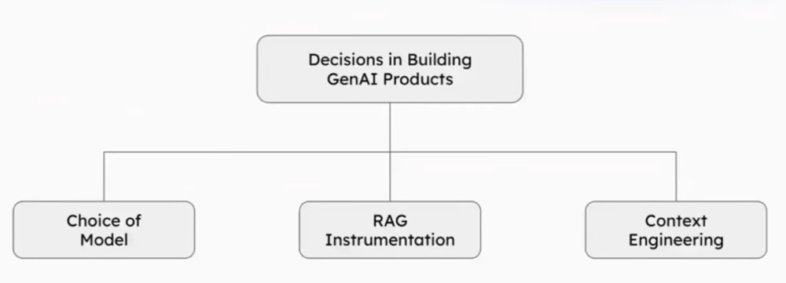

A missed escalation here isn't a bug ticket, it's a clinical event. Rebuilt from a generic prompt workflow into grounded, auditable retrieval.
A prompt-only LLM workflow: inconsistent emotional interpretation, weak Hinglish/slang understanding, hallucinated guidance.
Retrieval-grounded generation over curated clinical sources with confidence-gated escalation. 61% → 79% classification consistency.
The platform started with a standard prompt-based LLM workflow for emotional classification and conversational guidance. It surfaced three problems fast: inconsistent emotional interpretation, weak understanding of Hinglish and youth slang, and hallucinated or unsupported behavioral guidance.
We initially tried solving this through prompt refinement, but the model lacked grounded contextual understanding for the domain and audience. That's a different problem than a prompting problem.
Users write the way they actually talk, mixing English, Hindi, abbreviations, emojis, and emotional shorthand. A system that normalizes that input too aggressively loses the emotional context it needs to respond well; one that doesn't normalize it at all can't reliably parse intent.
We moved from pure generative behavior to retrieval-augmented generation, grounding every response in curated behavioral and emotional knowledge rather than the model's pretrained instincts. The architecture has five layers: document ingestion, user input processing, retrieval, contextual grounding, and response generation with classification.
Knowledge came from curated sources, not unrestricted web retrieval, chunked by behavioral meaning rather than document size: emotional patterns, escalation indicators, conversation guidance, behavioral recommendations, youth slang mappings, and clinical escalation rules each became their own semantically coherent chunk. A history-aware layer reformulates vague follow-ups into complete questions before querying, so multi-turn conversations retrieve accurately instead of treating every message as a cold start.


Certain emotional patterns or ambiguity levels trigger escalation recommendations instead of an open-ended AI response. That's a deliberate ceiling on what the system is allowed to improvise, in a domain where an overconfident answer carries real risk. The major improvement wasn't that the model got "smarter," it's that the system became more reliable and operationally predictable, which is the property that actually matters in this domain.
I'm looking for Senior AI Product Manager roles where the product ships to people who depend on it.
Let's talk →